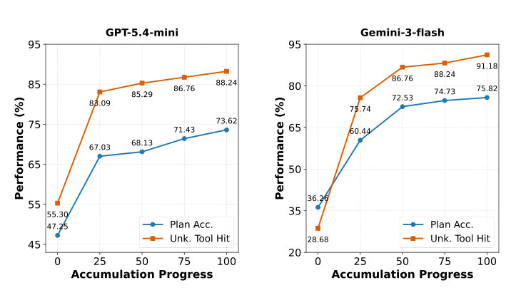

A research agent may already have the right tool for a task, or it may find superficially similar tools with incompatible inputs. SciToolAgent-Evo studies how to identify a gap, acquire a tool from a candidate pool, and retain what worked. On OpenSciToolBench, it raises final-answer accuracy with GPT-5.4-mini from 52.17% for the strongest baseline to 64.28%. Accuracy on the hardest level remains 32.89%. Paper Table 1
This reading follows the arXiv v1 paper by Yuqi Tang and colleagues, submitted July 30, 2026.
1. Understanding the Topic: Can the Tools Work Together?
Suppose we want to compare two materials measurements. One tool reads spectra, and another compares curves, provided their coordinates and units agree. Matching the phrase “curve comparison” retrieves a plausible tool. Before running it, the agent still needs to determine whether a coordinate conversion is needed, which values to retain, and whether the conversion produces the next tool's required input.
A scientific tool chain therefore requires two judgments: whether each tool performs the needed operation and whether the tools can be composed under the same constraints. When descriptions are incomplete, the agent also has to decide whether to reuse a familiar path or spend resources searching for alternatives.
2. Related Work: Tool Graphs, Experience, and Exploration
| Work | Main idea | Connection to this paper |
|---|---|---|
| SciToolAgent | Retrieves and organizes tools through a scientific knowledge graph | Evo inherits the graph and enriches it with initially unknown tools after successful use |
| EvoScientist | Stores persistent experience from ideation and experiments | Both reuse experience. Evo's memories directly guide tool selection and composition |
| LinUCB | Estimates rewards from context and gives uncertain actions an exploration bonus | Evo uses it to choose between known-tool exploitation and unknown-tool exploration |
3. Research Questions: What Does the System Learn?
We organize the experiments around three questions:
- With complete descriptions initially available for only half of the tools, can the agent assemble an appropriate chain and answer correctly?
- How much do reusable chains, fine-grained experience, and tool migration each contribute? Does migration during accumulation serve the same role as migration during inference?
- How do difficulty, a sparser known-tool graph, and inference overhead affect the results? Sections 3–5
4. Understanding the Method: Turning Contrasting Runs into Future Tool Choices

Step 1. Represent three kinds of memory. A skill stores a reusable tool chain for a task family. Experience captures finer-grained selection guidance, either general or domain-specific. The tool graph stores functionality, input and output types, applicable objects and scenarios, and relationships among tools. In this paper an ontology is a structured description of what a tool does, what it accepts, and when it applies. Section 4.1
Step 2. Compare a success and a failure on the same task. A training task starts with a rollout at temperature 0. A success yields a skill. A failure leads to three attempts at 0.2, 0.5, and 0.8. If any exploration succeeds, the agent compares one success with the original failure, identifies the decision where their paths diverge, and extracts general and domain-specific guidance. Entries that closely duplicate existing experience are discarded. The backbone weights stay fixed. Section 4.2 and Appendix G
Step 3. State the requirement and choose where to search. A matched skill supplies its tool chain. Other tasks are routed to lightweight planning or active acquisition according to estimated difficulty. Active acquisition splits the objective into requests such as producing curves on a common coordinate grid. Semantic retrieval, graph relationships, and reranking identify candidates. For each request, LinUCB uses the best candidate's feasibility, the margin between the top two, ontology alignment, and a prior for exploration success. It scores the two actions by combining estimated reward with an uncertainty bonus. Section 4.3
Step 4. Execute and update memory. The executor runs the planned chain in sequence and the summarizer produces an answer. A successful run with an unknown tool lets the agent complete its description, add it to the known graph, and retain a reusable skill. Execution feedback also updates the gate's reward estimate. An unknown tool is initially outside the known graph and available in a predefined pool with minimal basic attributes. Sections 4.1 and 4.3
5. Experimental Design and Results: Accuracy, Contributions, and Cost
Main Evaluation: Tool-Chain Alignment and Final Answers
OpenSciToolBench builds questions from an existing tool graph, using model checks of tasks and chains followed by human validation. Appendix Table A5 reports 900 total questions, with 539 for training and 361 for testing. The four test levels contain 105, 95, 85, and 76 questions and reach paths of up to 10 tools. The other benchmark, SciToolEval, contains 531 questions. The main comparisons start with a 50% known, 50% unknown tool split and share downstream execution, summarization, and evaluation. Tool Accuracy measures alignment with a reference chain. GPT-5-mini evaluates final answers. Sections 5.1–5.3 and Appendix G
| Benchmark | Backbone | Tool accuracy | Answer accuracy | Strongest baseline answer accuracy |
|---|---|---|---|---|
| OpenSciToolBench | GPT-5.4-mini | 66.76 ± 0.74 | 64.28 ± 0.85 | CoT 52.17 ± 0.89 |
| OpenSciToolBench | Gemini-3-flash | 69.53 ± 2.77 | 67.26 ± 0.96 | Reflexion 57.71 ± 1.21 |
| SciToolEval | GPT-5.4-mini | 83.91 ± 1.75 | 82.84 ± 1.87 | CoT 76.73 ± 1.73 |
| SciToolEval | Gemini-3-flash | 78.79 ± 1.40 | 77.97 ± 1.75 | ReAct 75.08 ± 0.76 |
Values are percentages, reported as mean ± standard deviation across three independent runs. Source: Tables 1–2.
Overall answer accuracy leads for both backbones on both benchmarks. GPT-5.4-mini gains 12.11 percentage points over its strongest OpenSciToolBench baseline, while its answer accuracy falls from 83.49% at Level 1 to 32.89% at Level 4. On the SciToolEval single-tool subset with Gemini-3-flash, Reflexion scores 88.16% against Evo's 86.84%. The overall gain varies across subsets. Tables 1–2
Supporting Evaluation: Accumulation and Online Updates
The full configuration scores 67.22 in Table 3. Removing all migration yields 51.53, a drop of 15.69 points. Removing inference-only migration yields 63.71, a drop of 3.51 points. Removing knowledge accumulation costs 14.87 points. Enabling migration in both phases produces the highest result in this comparison, and disabling it only during inference has a smaller effect. Read these as within-Table-3 comparisons, alongside the separate three-run main results from Table 1. Table 3

In Figure 4, the initially unknown-tool hit rate for GPT-5.4-mini rises from 55.30% to 88.24%, with most of the gain occurring in the first quarter of accumulation. This metric tracks tool hits. Appendix Table A4 reports that, compared with SciToolAgent, the full method increases mean time per task from 17.2 to 26.4 seconds and estimated API cost from $0.007 to $0.018. Figure 4 and Table A4
6. Our Reflections
Topic Reflection: What Is This Field Studying?
A larger tool library makes it important to preserve the right evidence for future tasks. One successful run can yield a complete chain, an explanation of why one choice worked, or a more precise description of a tool's requirements. Those records have different scopes. Storing them separately lets later tasks combine them as needed.
Limitation Reflection: What Remains Unresolved?
Unknown tools come from a predefined pool. The benchmark starts from an existing graph and restricts which attributes are initially visible. Real services also change interfaces, permissions, and runtime requirements. Reference chains provide one evaluation target. Different paths can produce equivalent outputs, and a correct answer still calls for checking the execution trail. Online updates depend on feedback. The paper defines an execution signal for updating the gate and graph. Deployed research tasks often lack an immediately available reference answer, making the reliability of migration depend on feedback quality. Sections 3–4 and Appendix A
Solution Reflection: What Directions Could Address These Issues?
Split tests by tool version, provider, and time to reserve genuinely unseen interfaces, and record acquisition failures and operating costs. For tasks with several valid paths, assess equivalent paths using output contracts and independently checkable intermediate artifacts. Before adding a new tool to the graph, use a minimal runnable case to check its inputs, outputs, and failure behavior, then freeze the graph and measure reuse and erroneous migration on subsequent tasks.
Figures are from SciToolAgent-Evo v1 by Tang et al., reproduced under CC BY 4.0.